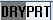
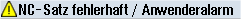
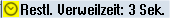

Es werden der Kanalzustand, aktive Programmbeeinflussungen sowie Kanalbetriebsmeldungen angezeigt.
Welche Programmbeeinflussungen angezeigt werden, hängt von den Einstellungen des Maschinenherstellers ab.
 | Maschinenhersteller Beachten Sie hierzu bitte die Angaben des Maschinenherstellers. |
Kanalzustand
Anzeige | Bedeutung |
|---|
 | Sind an der Maschine mehrere Kanäle vorhanden, wird auch der Kanalname angezeigt. Ist nur ein Kanal vorhanden, wird nur "Reset" als Kanalzustand angezeigt. Bei Touch-Bedienung, können Sie hier den Kanal umschalten. |
 | Das Programm wurde mit "Reset" abgebrochen. |
| | Das Programm wird abgearbeitet. |
 | Das Programm wurde mit "Stop" unterbrochen. |
Programmbeeinfussungen
Anzeige | Bedeutung |
|---|
|  | PRT: keine Achsbewegung DRY: Probelaufvorschub M01: programmierter Halt 1 M101: programmierter Halt 2 (Bezeichnung variabel) SB1: Einzelsatz grob (Programm stoppt nur nach Sätzen, die eine Maschinenfunktion ausführen) SB2: Rechensatz (Programm stoppt nach jedem Satz) SB3: Einzelsatz fein (Programm stoppt auch in Zyklen nur nach Sätzen, die eine Maschinenfunktion ausführen) CST: konfigurierter Halt (Programm stoppt an den Halt-relevanten Stellen, die Sie vor dem Programmstart definiert haben) |
Kanalbetriebsmeldungen
Anzeige | Bedeutung |
|---|
|  | Halt: Es ist i.d.R. eine Bedienhandlung erforderlich. |
|  | Warten: Es ist keine Bedienhandlung erforderlich. |
| | Safety: Es ist i.d.R. eine Bedienhandlung erforderlich, z. B. das Schließen der Schutztür. |